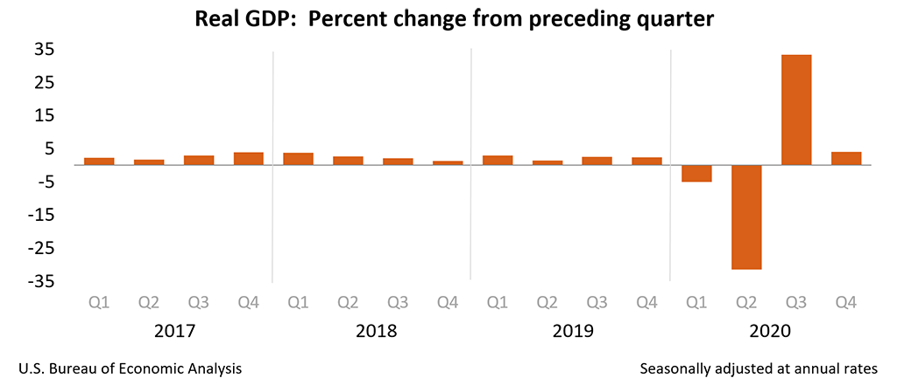
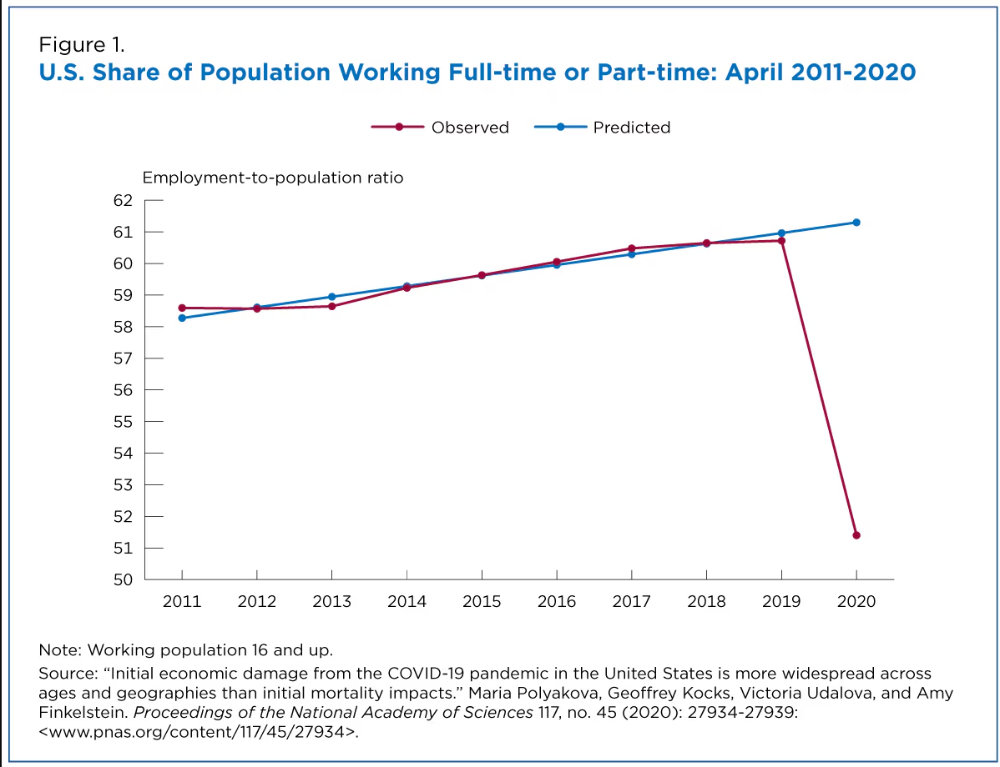

The begginning: Biggest effect, biggest reaction
Covid-19 cripples US economy in 2020
URL: https://youtu.be/Z7ejQwjxpi0?si=LqPy8eqlI22lnYQE
A More Detailed Overview:
|  |  |
The U.S. economy lost 23 million jobs at the start of the pandemic, leading to a recession in early 2020. The federal government responded with sharp increases in fiscal spending, and the Federal Reserve lowered interest rates to near zero and kept them there for almost 2 years.
Main Sources of High Inflation were:
- Food and Energy Prices
- Increased demand for durables and shortages caused by supply-chain disruption
- Lacking labor-market conditions